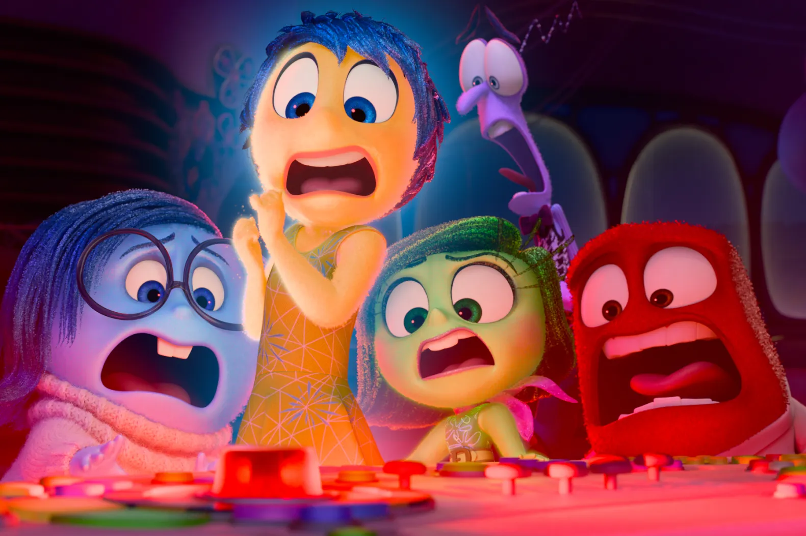
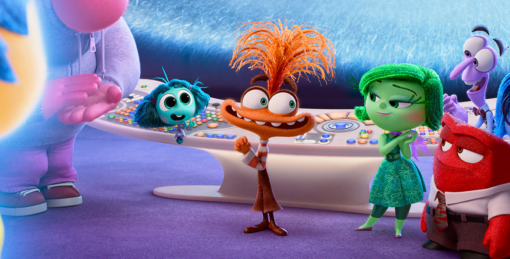
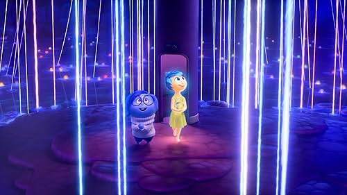

INSIDE OUT 2:
What 4 New Emotions Can Tell Us About Growing Up
By CBC Kids News * June 17, 2024
Emotions Are Clues About Ourselves
The sequel to a film that captivated many with its wisdom about emotions is already a hit at the box office. Disney and Pixar’s Inside Out 2 debuted Friday and earned about $213 million Cdn in U.S. and Canadian ticket sales over the weekend, according to The Associated Press. That makes it the second-biggest opening weekend in history for an animated film, behind the 2018 film Incredibles 2. But the film isn’t just fun summer entertainment — according to one mental health expert, there’s a lot kids can take away from it about how to manage their emotions.
Four New Emotions
The original Inside Out is about an 11-year-old girl named Riley who has to learn how to manage her emotions as her family moves away from all her friends. The film depicts those emotions — Joy, Sadness, Anger, Fear and Disgust — as animated characters that Riley can interact with and learn from. In the new film, Riley is back, but now that she’s a little bit older, she’s experiencing four new emotions: Anxiety: A nervousness about something bad or uncertain happening in the future. Embarrassment: A feeling that you’ve done something incorrect or wrong that makes you want to retreat. Envy: A longing for something someone else has, like a material possession or a characteristic about them. Ennui: Put simply, boredom. In a statement to CBC Kids News, Pixar said it included the four new emotions because they represent the type of self-consciousness that comes with puberty.
For example, “embarrassment involves worrying about someone else's opinion [and] envy happens when we question why others have skills or material objects that we want for ourselves,” said psychologist Lisa Damour, who was a consultant for the film. Jake Coyle, a film critic with The Associated Press, said the film deserves praise for taking on important topics and ideas, including anxiety — something highly relevant to the teens of today. “The care is taken here to illustrate how new impulses can run roughshod over a young person and throw their internal compass out of whack,” he wrote.
Emotions Are Clues
In order to process our emotions, we first need to know what emotion we’re experiencing. But as kids get older and enter puberty, emotions can get more complex and harder to identify, says clinical psychologist Kristel Thomassin. In Inside Out 2, Riley’s nine emotions live in her brain and guide her as she heads off to hockey camp. (Image credit: Disney/Pixar) That’s what she likes about the Inside Out series, she says — it gives our emotions a character and a face, which could help teach kids how to better recognize what they’re feeling. “Once we know what emotion we’re feeling, we can get information from it,” said Thomassin. “Emotions are clues.” For example, if your mom were to take away your phone because of a bad grade, you may get angry and have a tantrum — which probably won’t get you anywhere. Instead, you could pause and see if that anger is clueing you into something. Maybe it’s a clue that you have a need that isn’t being met. Perhaps it’s the need for social interaction that you usually get from texting your friends. Instead of lashing out at your mom, you could instead plan to hang out with friends in person in order to meet that need in a different way. With that said, regulating our emotions takes many years of practice. And it’s also possible to experience many emotions at once, Thomassin says. “It’s quite challenging, in these years, to be able to differentiate emotions and feel all of those feelings,” she said.
Give Your Emotions Space To Be
It’s important to learn how to process our emotions, but Thomassin said our society sometimes focuses too much on “dealing with” or extinguishing them right away. For example, a friend breakup can be devastating, and the emotions that come with it may take days or weeks to accept and process. “Sometimes it’s important to allow yourself the space to feel those emotions, and that can be helpful,” she said. When you’re going through a difficult time like that, it’s important to check in with yourself every once in a while and ask: Is experiencing this emotion still helpful? “If the emotion is feeling worse and worse to the point where you no longer want to go to school, that’s not helpful,” she said. At that point, it may be time to take a different approach to process the emotion. One of those ways can be talking to a trusted adult or an anonymous service like Kids Help Phone. Here’s how you can get in contact with them.